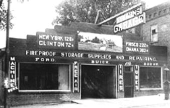
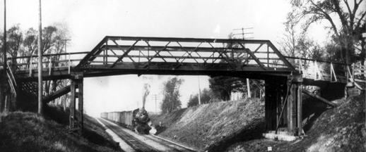
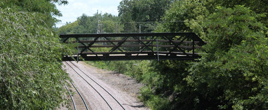
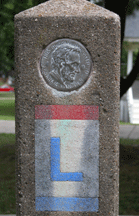

The Lincoln Highway Era

Download The Lincoln Highway Association's "Object Lesson:" The Seedling Mile in Linn County, Iowa
Download The Lincoln Highway Association's "Object Lesson:" The Seedling Mile in Linn County, Iowa
The roadway again became a major means of transportation in the early 20th century with the establishment of the first transcontinental route: Highway 30, the Lincoln Highway. With automobiles growing popularity, tourist camps, small hotels, billboards, garages, and filling stations were built along the Lincoln Highway, both in and around Mount Vernon.
An electric interurban railway from Cedar Rapids to Lisbon (completed 1914; abandoned 1928) provided timely, inexpensive transportation to the palisades resort area four miles west and to Cedar Rapids. Now only the rails buried under First Street and the remnants of the elevated right-of-way east of the Middle School bear witness to its existence.
The existing Highway 30 route was completed in the 1950s, putting and end to downtown Mount Vernon's contribution to coast-to-coast travel. You can still see what remains: wooden bridge at the west end overlooking the railroad tracks; an original concrete Lincoln Highway marker moved to memorial park; and the Floyd Mersh house, 210 First Street East, which was the site of one of Mount Vernon's first motor tourist hotels. Also note placement of existing businesses in the thriving downtown shopping area: merchant shops west of Highway 1, service shops east. All point to this last influencing factor in Mount Vernon's History.


Lincoln Highway Marker (Memorial Park)